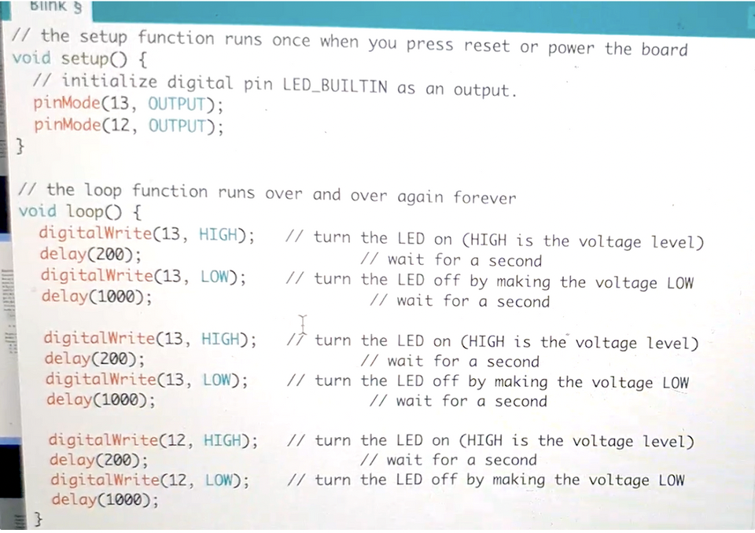
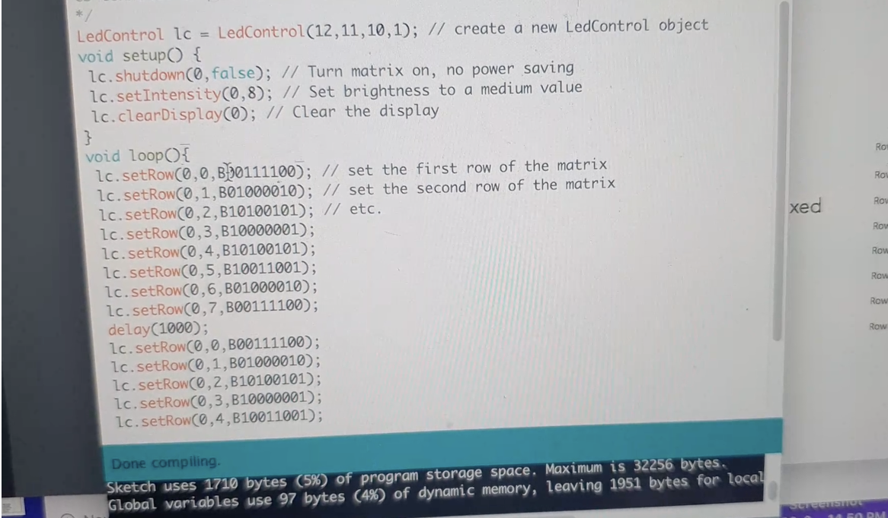
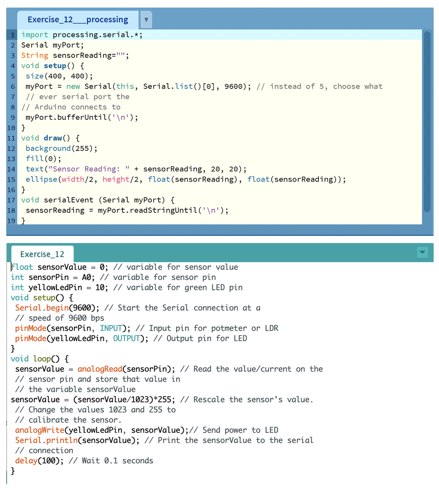

-
For this workshop I demonstrated my process in video formats. In each video you will see my:
- Circuit setup
- Results of the exercises, as well as
- Explanation about the coding adjustments I made to achieve such results.
Arduino Setup
At the beginning I paid so much attention on not breaking my only Arduino set, I did not know that the jump wires were separable.
EXERCISE 3B: BLINK MULTIPLE LEDS

EXERCISE 4C: FADE LED – ANALOG OUTPUT

EXERCISE 6C: CONTROLLING A LED WITH A POTMETER

EXERCISE 7A: LED MATRIX

EXERCISE 8A: CONTROL THE LED WITH LIGHT

EXERCISE 9C: SOUND

EXERCISE 11C: DISTANCE

EXERCISE 12D: ARDUINO AND PROCESSING
-

- For this exercise, I have tried many different portals but was not able to connect it to Processing. I wonder if this could be a hardware problem instead of the codes, since I have followed the step by step instructions.
EXERCISE 13B: PROCESSING AND ARDUINO
- This exercise has similar problems with the previous one.

EXERCISE 14B: BUTTONS

EXERCISE 15B: SERVOMOTOR

EXERCISE 16D: CAPACITIVE TOUCH